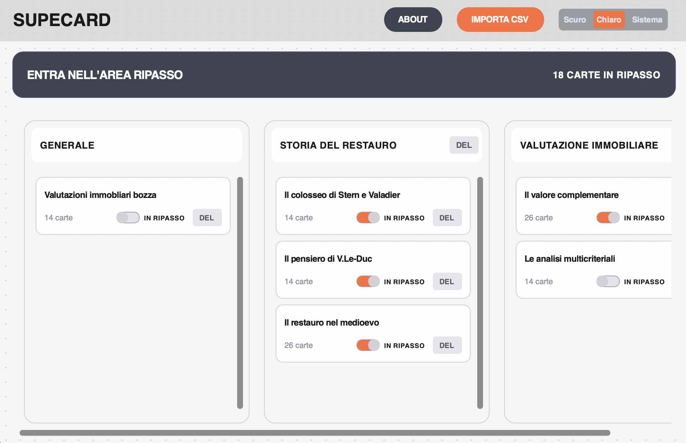
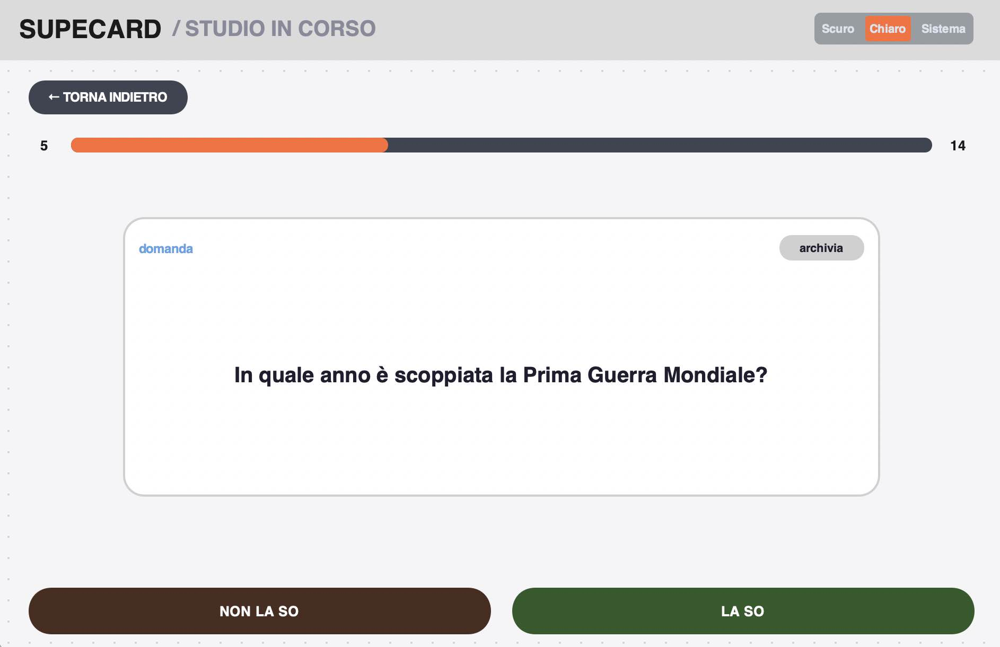

Versione 1.2.0
Dai tuoi appunti
alla memoria.
Zero attrito.
L'app desktop per studiare all'istante le flashcard da NotebookLM o dal tuo Excel.
Importazione Lampo
Prendi il CSV da NotebookLM o dal tuo Excel, trascinalo e sei pronto. Nessuna configurazione, zero perdite di tempo.
Isola i tuoi errori.
Quando sbagli una carta, SupeCard 1 la sposta da sola nell'Area Ripasso. Resta lì finché non la memorizzi davvero. Focus totale dove serve.

Dashboard
Organizzazione in colonne stile Kanban con scorrimento indipendente dei mazzi.

Studio Veloce
Zero delay. Interfaccia fulminea e card stabili per la massima concentrazione.
